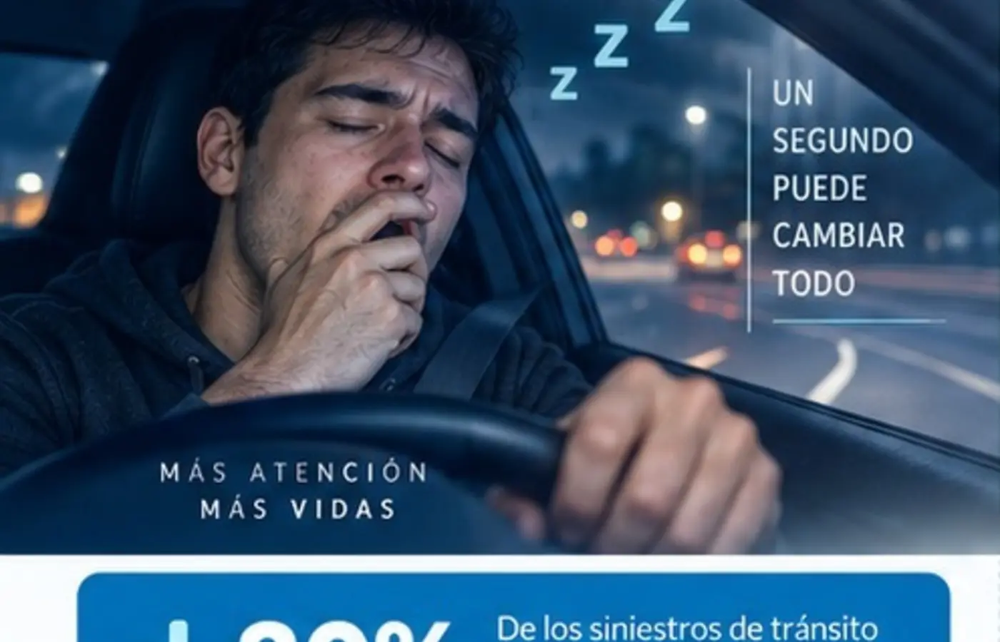
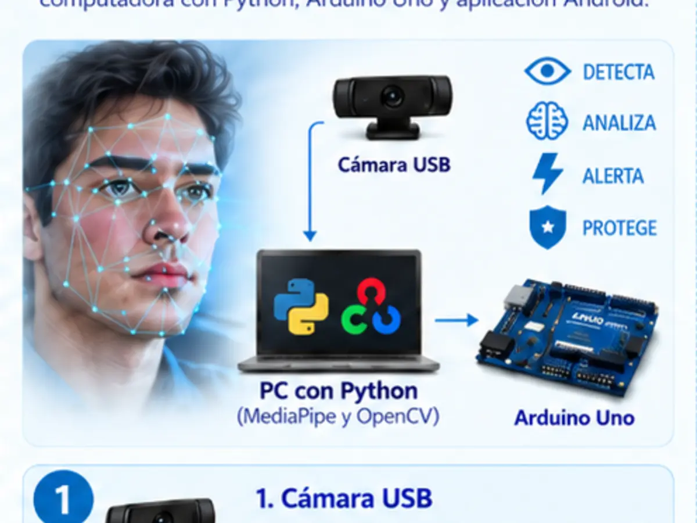

Estado 0
Normal
Ojos abiertos o cierre menor de 0,35 segundos.
LED verdeInnovación científica y visión artificial
Dreams WakeUp analiza la apertura de los ojos en tiempo real y activa alertas visuales y sonoras para ayudar al conductor a recuperar la atención.
El problema
La somnolencia reduce la capacidad de reacción del conductor. El prototipo busca reconocer señales de cierre ocular y responder rápidamente mediante una alerta progresiva.
Objetivo: advertir al conductor para que pueda detenerse en un lugar seguro y descansar.

Respuesta progresiva
El sistema clasifica el cierre ocular según el tiempo continuo detectado.
Estado 0
Ojos abiertos o cierre menor de 0,35 segundos.
LED verdeEstado 1
Cierre desde 0,35 hasta menos de 0,70 segundos.
LED amarillo + avisoEstado 2
Cierre continuo igual o mayor de 0,70 segundos.
LED rojo + alarmaFuncionamiento
Todo el procesamiento se realiza dentro del prototipo y la aplicación se comunica por la red Wi‑Fi local.
La cámara USB obtiene imágenes del rostro y los ojos.
MediaPipe y OpenCV localizan el rostro y calculan el índice de apertura ocular.
Python determina si el estado es normal, advertencia o peligro.
Arduino controla los LED y el buzzer; Android muestra el estado y permite supervisar el sistema.

Prueba del prototipo
Esta sección está preparada para mostrar un video corto del funcionamiento real: ubicación de la cámara, detección del rostro y activación de las alertas.
Coloca tu video en assets/video-prueba.mp4 y aparecerá automáticamente aquí.
Tecnología utilizada
La página describe únicamente los elementos presentes en el sistema desarrollado.
Captura el rostro del conductor para el análisis continuo.
MediaPipe y OpenCV procesan los puntos faciales y la apertura ocular.
Recibe los estados 0, 1 y 2 y controla las alertas físicas.
Comunican visual y acústicamente el nivel de riesgo detectado.
Muestra la cámara, el estado, la calibración y el historial diario.
Permiten la comunicación entre la computadora y la aplicación.
Escalabilidad a futuro
Material informativo
Vista de las dos caras del tríptico presentado para el proyecto escolar.